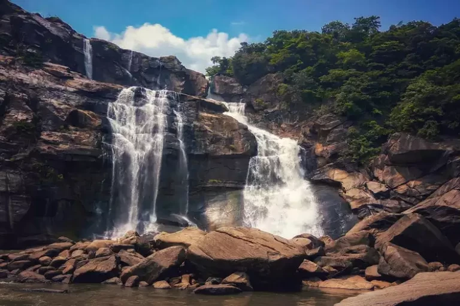
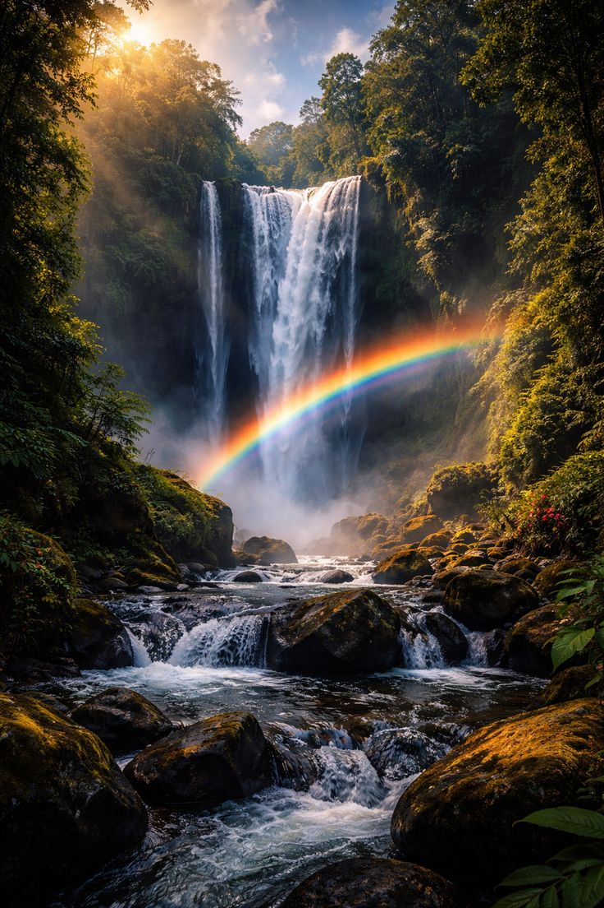
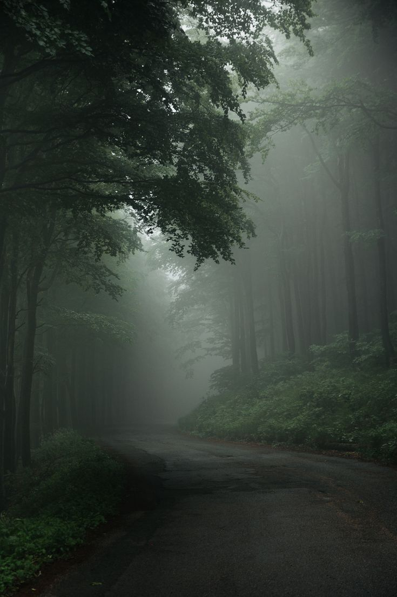

The Raw Beauty of Hundru Falls
Experience the breathtaking elements that make this waterfall truly spectacular

Powerful Cascade
The Subarnarekha River creates a mighty 98-meter drop, producing thunderous sounds and misty sprays.

Lush Forests
Surrounded by dense deciduous forests with diverse flora and fauna, creating a natural sanctuary.

Rock Formations
Unique basalt and granite formations sculpted by centuries of water flow create dramatic landscapes.

Rainbow Magic
Sunlight through the mist creates beautiful rainbows, especially in morning and late afternoon.
Photo Gallery

Panoramic view of the falls

Misty atmosphere at the base
Lush surrounding nature